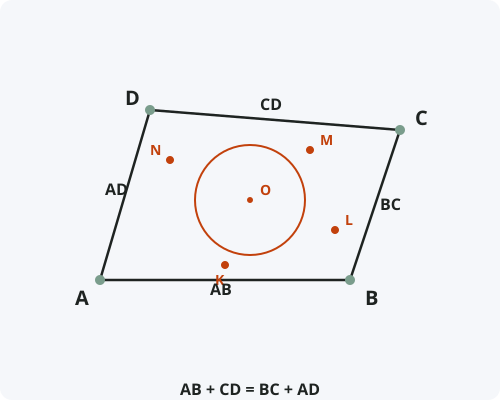

Описанный четырёхугольник (теорема Пито)
Формулировка
В описанном около окружности четырёхугольнике суммы противоположных сторон равны.
Обратно: если в выпуклом четырёхугольнике суммы противоположных сторон равны, то в него можно вписать окружность.
Обозначения
Пусть дан четырёхугольник ABCD, описанный около окружности.
Окружность касается сторон AB, BC, CD, AD в точках K, L, M, N соответственно.
Тогда: AB + CD = BC + AD

Доказательство (прямое)
Прямое утверждение доказано.
Доказательство (обратное)
Обратное утверждение доказано.
Следствия из теоремы
- Площадь описанного четырёхугольника: S = p · r, где p — полупериметр, r — радиус вписанной окружности.
- Если четырёхугольник одновременно вписанный и описанный, он называется бицентрическим.
- Для бицентрического четырёхугольника выполняется теорема Фусса: 1/(R−d)² + 1/(R+d)² = 1/r².
- Ромб и квадрат всегда являются описанными четырёхугольниками.
- Прямоугольник (не квадрат) нельзя описать около окружности.
Примеры применения
Пример 1. В описанном четырёхугольнике три стороны равны 5, 7 и 8. Найдите четвёртую сторону, если известно, что суммы противоположных сторон равны 13.
Решение: Пусть стороны a, b, c, d. Если a + c = 13 и b + d = 13. Подбирая, получаем d = 6.
Пример 2. Можно ли вписать окружность в четырёхугольник со сторонами 4, 6, 8, 10?
Решение: Проверяем суммы: 4 + 8 = 12, 6 + 10 = 16. Суммы не равны, вписать окружность нельзя.
Пример 3. Описанный четырёхугольник имеет стороны 3, 5, 7, x. Найдите x.
Решение: Возможны два варианта: 3 + 7 = 5 + x ⇒ x = 5; или 3 + 5 = 7 + x ⇒ x = 1 (невозможно для выпуклого четырёхугольника). Ответ: x = 5.
Историческая справка
Теорема об описанном четырёхугольнике была известна ещё древнегреческим математикам, но своё название «теорема Пито» получила в честь французского математика и инженера Анри Пито (1695–1771).
Пито доказал эту теорему в 1725 году. Он также известен как изобретатель трубки Пито — прибора для измерения скорости потока жидкости или газа, который до сих пор используется в авиации.
Интересно, что свойство равенства сумм противоположных сторон для описанного четырёхугольника было известно задолго до Пито, но его доказательство считается классическим.
Интересные факты
- Теорема Пито — аналог свойства касательных для четырёхугольника, обобщающий свойство равенства отрезков касательных из одной точки.
- Среди всех четырёхугольников с заданными сторонами описанный имеет максимальный радиус вписанной окружности.
- Дельтоид — четырёхугольник с двумя парами равных смежных сторон — всегда является описанным.
- В Японии существует традиция вешать на храмах деревянные таблички «сангаку» с геометрическими задачами. Многие из них посвящены описанным и вписанным четырёхугольникам.
- Теорема Пито обобщается на случай описанных многоугольников с чётным числом сторон: суммы сторон через одну равны.